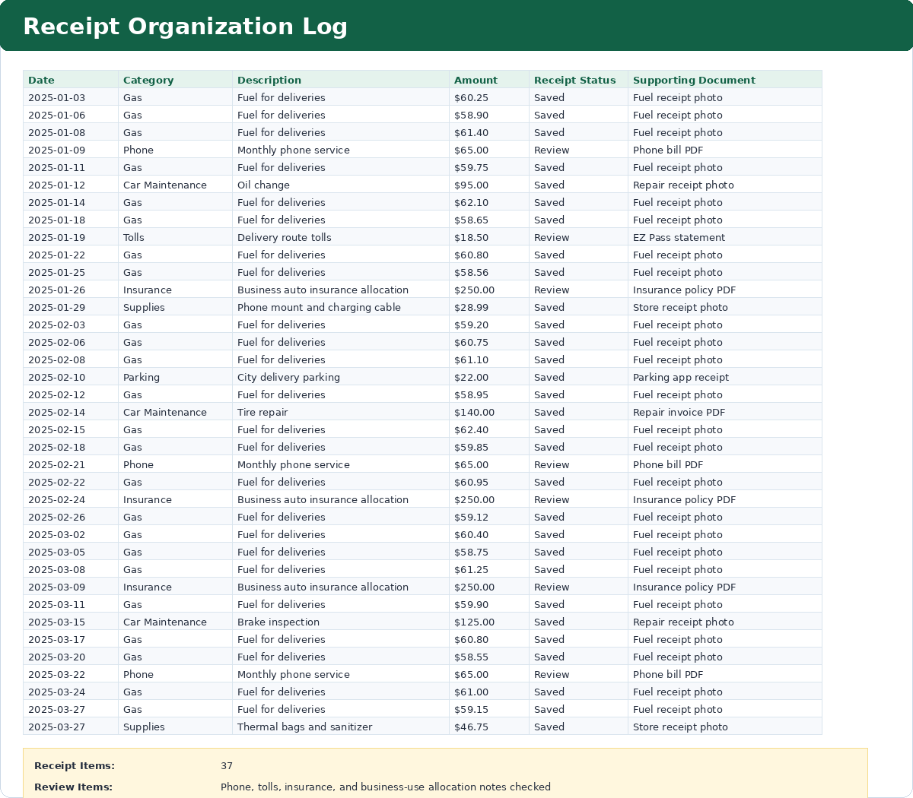

Purpose
Maintain proof of expenses by documenting whether receipts are saved or need review.
Simple Example
A car maintenance receipt is marked as saved, while some allocated or statement-based expenses are marked for review.
Simple Bookkeeping Decision Rule
Every expense should have supporting documentation when possible. If a receipt is missing, mark it for review instead of leaving it unclear.

Analysis
The receipt log includes 37 expense records across January through March 2025. It includes multiple gas purchases each month, monthly $250.00 insurance allocation entries, phone, tolls, parking, maintenance, and supplies. Each record includes a receipt status and a supporting document source for follow-up verification.
Result
The receipt log helps keep financial records audit-ready and easier to verify before preparing monthly summaries.